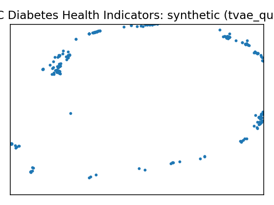

Data Report — CDC Diabetes Health Indicators
Source: UCI dataset 891
SemMap JSON-LD: dataset.semmap.json · RDFa HTML
Overview
| Metric | Value |
|---|---|
| Dataset | CDC Diabetes Health Indicators |
| Source | UCI dataset 891 |
| Rows | 253,680 |
| Columns | 22 |
| Discrete | 19 |
| Continuous | 3 |
| SemMap | SemMap JSON-LD SemMap HTML |
| Missingness | Not modeled |
Variables and summary
| variable | inferred | dist |
|---|---|---|
| HighBP | discrete | Reported high blood pressure [1]: 108829 (42.90%) |
| HighChol | discrete | Reported high cholesterol [1]: 107591 (42.41%) |
| CholCheck | discrete | Cholesterol check in past five years [1]: 244210 (96.27%) |
| BMI | continuous | 28.3824 ± 6.6087 [12, 24, 27, 31, 98] |
| Smoker | discrete | At least 100 cigarettes ever [1]: 112423 (44.32%) |
| Stroke | discrete | Stroke diagnosis [1]: 10292 (4.06%) |
| HeartDiseaseorAttack | discrete | CHD or MI diagnosis [1]: 23893 (9.42%) |
| PhysActivity | discrete | Physical activity reported [1]: 191920 (75.65%) |
| Fruits | discrete | Daily fruit consumption [1]: 160898 (63.43%) |
| Veggies | discrete | Daily vegetable consumption [1]: 205841 (81.14%) |
| HvyAlcoholConsump | discrete | Alcohol consumption above heavy threshold [1]: 14256 (5.62%) |
| AnyHealthcare | discrete | Has health care coverage [1]: 241263 (95.11%) |
| NoDocbcCost | discrete | Cost prevented doctor visit [1]: 21354 (8.42%) |
| GenHlth | discrete | Very good health [2]: 89084 (35.12%) Good health [3]: 75646 (29.82%) Excellent health [1]: 45299 (17.86%) Fair health [4]: 31570 (12.44%) Poor health [5]: 12081 (4.76%) |
| MentHlth | continuous | 3.1848 ± 7.4128 [0, 0, 0, 2, 30] |
| PhysHlth | continuous | 4.2421 ± 8.7180 [0, 0, 0, 3, 30] |
| DiffWalk | discrete | Reported difficulty walking or climbing stairs [1]: 42675 (16.82%) |
| Sex | discrete | Male [1]: 111706 (44.03%) |
| Age | discrete | 60–64 years [9]: 33244 (13.10%) 65–69 years [10]: 32194 (12.69%) 55–59 years [8]: 30832 (12.15%) 50–54 years [7]: 26314 (10.37%) 70–74 years [11]: 23533 (9.28%) 45–49 years [6]: 19819 (7.81%) 80 years or older [13]: 17363 (6.84%) 40–44 years [5]: 16157 (6.37%) 75–79 years [12]: 15980 (6.30%) 35–39 years [4]: 13823 (5.45%) … (+3 more) |
| Education | discrete | College 4 years or more (college graduate) [6]: 107325 (42.31%) College 1–3 years (some college or technical school) [5]: 69910 (27.56%) Grade 12 or GED (high school graduate) [4]: 62750 (24.74%) Grades 9–11 (some high school) [3]: 9478 (3.74%) Grades 1–8 (elementary) [2]: 4043 (1.59%) Never attended school or only kindergarten [1]: 174 (0.07%) |
| Income | discrete | $75,000 or more [8]: 90385 (35.63%) $50,000 to <$75,000 [7]: 43219 (17.04%) $35,000 to <$50,000 [6]: 36470 (14.38%) $25,000 to <$35,000 [5]: 25883 (10.20%) $20,000 to <$25,000 [4]: 20135 (7.94%) $15,000 to <$20,000 [3]: 15994 (6.30%) $10,000 to <$15,000 [2]: 11783 (4.64%) Less than $10,000 [1]: 9811 (3.87%) |
| Diabetes_binary | discrete | Prediabetes or diabetes diagnosis [1]: 35346 (13.93%) |
Fidelity summary
| umap | model | backend | disc jsd mean | disc jsd median | cont ks mean | cont w1 mean | downstream sign match |
|---|---|---|---|---|---|---|---|
| metasyn | metasyn | 0.0288 | 0.0209 | 0.4691 | 2.2955 | 0.5185 | |
| clg_mi2 | pybnesian | 0.0229 | 0.0186 | 0.2691 | 2.9528 | ||
| semi_mi5 | pybnesian | 0.0239 | 0.0157 | 0.2634 | 2.9669 | ||
| ctgan_fast | synthcity | 0.2127 | 0.1539 | 0.802 | 7.7665 | ||
 |
tvae_quick | synthcity | 0.0864 | 0.0658 | 0.3607 | 1.8369 |
Privacy summary
| model | backend | n real | n synth | exact overlap rate | near duplicate rate eps | nn distance mean | k min | k pct lt5 | k map | rare qi reproduction rate | identifiability score | delta presence |
|---|---|---|---|---|---|---|---|---|---|---|---|---|
| metasyn | metasyn | 253680 | 1000 | 0 | 0.876 | 0.1199 | 1 | 0.9939 | 1 | 0 | 79 | |
| clg_mi2 | pybnesian | 253680 | 1000 | 0 | 0.945 | 0.074 | 1 | 0.9939 | 2 | 0 | 14.5 | |
| semi_mi5 | pybnesian | 253680 | 1000 | 0 | 0.899 | 0.0977 | 1 | 0.9939 | 12 | 0 | 1.9333 | |
| ctgan_fast | synthcity | 253680 | 256 | 0 | 0.1367 | 0.3833 | 1 | 0.9939 | 5 | 0 | 3.8 | |
| tvae_quick | synthcity | 253680 | 256 | 0 | 0.9258 | 0.0772 | 1 | 0.9939 | 2 | 0 | 4 |
Models
| UMAP | Details | Structure | |||||||||||||||||||||||||||||||||||||||||||||||||||||||||||||||||||||||||||||||||||||||||||||||||||||||||||||||||||||||||||||||||||
|---|---|---|---|---|---|---|---|---|---|---|---|---|---|---|---|---|---|---|---|---|---|---|---|---|---|---|---|---|---|---|---|---|---|---|---|---|---|---|---|---|---|---|---|---|---|---|---|---|---|---|---|---|---|---|---|---|---|---|---|---|---|---|---|---|---|---|---|---|---|---|---|---|---|---|---|---|---|---|---|---|---|---|---|---|---|---|---|---|---|---|---|---|---|---|---|---|---|---|---|---|---|---|---|---|---|---|---|---|---|---|---|---|---|---|---|---|---|---|---|---|---|---|---|---|---|---|---|---|---|---|---|---|---|
 |
Real data | ||||||||||||||||||||||||||||||||||||||||||||||||||||||||||||||||||||||||||||||||||||||||||||||||||||||||||||||||||||||||||||||||||||
 |
Model: metasyn (metasyn)
Per-variable fidelity
Downstream metrics
Privacy metrics
|
| |||||||||||||||||||||||||||||||||||||||||||||||||||||||||||||||||||||||||||||||||||||||||||||||||||||||||||||||||||||||||||||||||||
 |
Model: clg_mi2 (pybnesian)
Per-variable fidelity
Privacy metrics
|
 | |||||||||||||||||||||||||||||||||||||||||||||||||||||||||||||||||||||||||||||||||||||||||||||||||||||||||||||||||||||||||||||||||||
 |
Model: semi_mi5 (pybnesian)
Per-variable fidelity
Privacy metrics
|
 | |||||||||||||||||||||||||||||||||||||||||||||||||||||||||||||||||||||||||||||||||||||||||||||||||||||||||||||||||||||||||||||||||||
 |
Model: ctgan_fast (synthcity)
Per-variable fidelity
Privacy metrics
| ||||||||||||||||||||||||||||||||||||||||||||||||||||||||||||||||||||||||||||||||||||||||||||||||||||||||||||||||||||||||||||||||||||
Model: tvae_quick (synthcity)
Per-variable fidelity
Privacy metrics
|